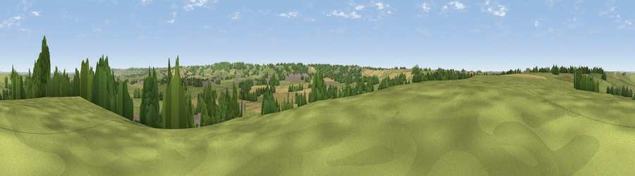

Viewpoint near Upper Broughton
#33475 in England · top 58% of its area beats it · near Upper Broughton · path 202 mWhere it is
The exact computed spot (SK 68375 26875). Click the marker for map links.
Public access: the nearest public right of way is about 202 m away — the final stretch may cross private land. Computed from Natural England's CRoW access layer and OpenStreetMap rights of way — not the legal definitive map. Always verify locally.
The view, rendered

A 360° render of this exact spot computed from the terrain model, tree cover and land cover — summer colours, afternoon light, calibrated against photographs of famous viewpoints. Real trees, hedges and buildings will differ in detail.
The panorama
Grey silhouette: terrain skyline in each direction (720 bearings, Earth curvature and refraction included). Dashed green: skyline with trees (+15 m) and buildings (+8 m) as obstacles. Blue strip: how far the ground is visible on each bearing.
Where the view opens
Wedge length = distance to the farthest visible ground on that bearing (vegetation-aware). Rings at 10, 25 and 50 km.
What fills the view
76% grassland · 11% woodland · 8% cropland · 5% built-up
Angular shares of the visible panorama (visual magnitude), not map area. Landscape diversity 0.35 (0–1 Shannon).
Key numbers
More beautiful places nearby
The staircase of upgrades: each row has a higher view potential than everything closer. Driving times are estimates from straight-line distance, calibrated against real road routing — check an actual route before setting out.
| Place | Direction | Drive | Score |
|---|---|---|---|
| Viewpoint near Hickling | N · 1 km | ~4 min | 51.9 |
| Viewpoint near Wartnaby | SE · 4 km | ~9 min | 56.4 |
| Viewpoint near Wartnaby | SE · 4 km | ~9 min | 61.6 |
| Viewpoint near Eastwell | E · 8 km | ~16 min | 63.7 |
| Viewpoint near Stathern | ENE · 10 km | ~20 min | 66.3 |
| Viewpoint near Stathern | ENE · 11 km | ~21 min | 67.2 |
| Viewpoint near Belvoir | ENE · 15 km | ~27 min | 68.9 |
| Viewpoint near Belvoir | ENE · 15 km | ~27 min | 70.8 |
52.83506, -0.98648 · source: screening · position refined by local search. Computed location — check access rights before visiting.